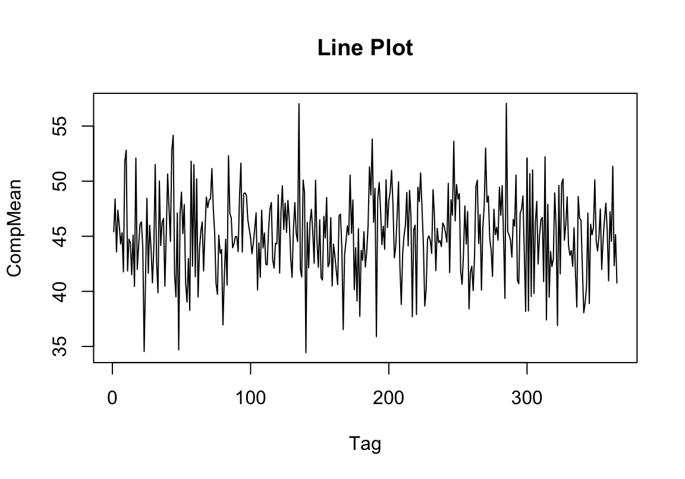
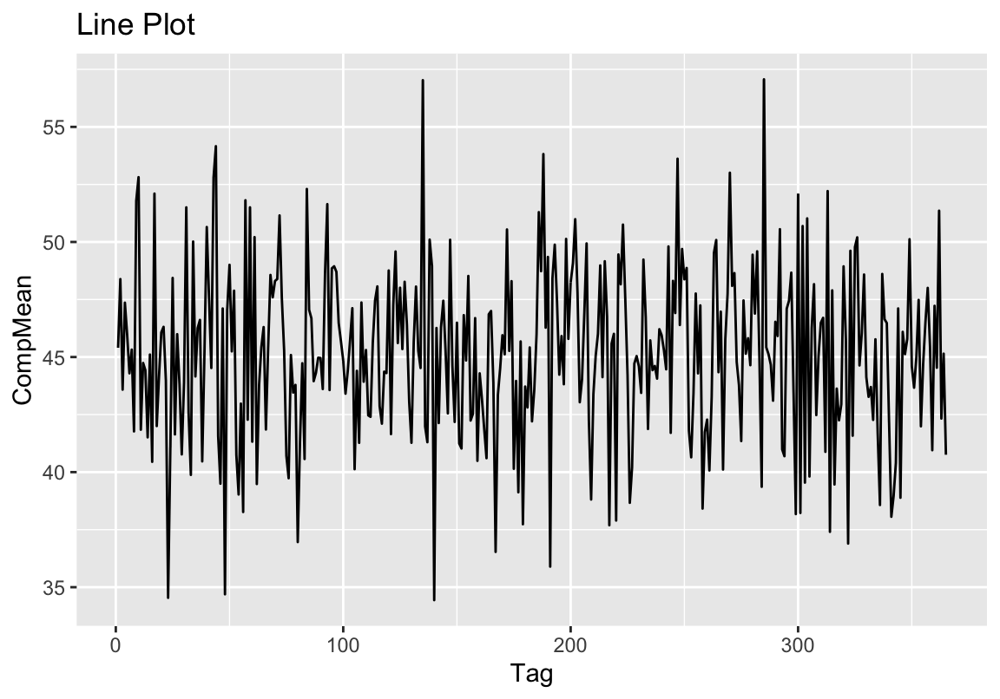

This book is in Open Review. I want your feedback to make the book better for you and other readers. To add your annotation, select some text and then click the on the pop-up menu. To see the annotations of others, click the in the upper right hand corner of the page
Sitzung 4
Wiederholung
Das Wichtigste vom letzten Mal
- Wir haben verschiedene Methoden besprochen, nur Teile einer Tabelle zu verwenden (“Subsetting”)
- Was bedeuten die unteren Befehle?
- Wir können Daten in R einlesen und aus R exportieren und so auf dem Computer speichern:
Übung
Übung
- Lest die Datei “workwithme.csv” als Objekt d ein und lasst euch die ersten 10 Zeilen anzeigen
- Erstellt eine neue Spalte mit dem Namen “sum”, die die Zeilensumme der Spalten “aldi”, “lidl” und “penny” enthält
- Erstellt eine neue Spalte “sumrank”: Wenn in der “sum”-Spalte ein Wert steht, der größer als 140 ist, dann enthält sie den Wert “high”, von 140 bis 125 “medium” und darunter “low”
- Erstellt eine Spalte, die den Mittelwert der Werte aus den Spalten “aldi”, “lidl” und “penny” enthält
- Erstellt eine Spalte, die den Monat des Jahres enthält. Benutzt dafür die
substring-Funktion - Benennt die Spalten um
- Speichert das Datenblatt als csv-Datei auf eurem Computer, benutzt die folgenden Parameter: Spaltentrenner = |, keine Anführungszeichen um Text, keine Zeilennamen. Benutzt die Hilfefunktion, um die relevanten Argumente der
write.csv-Funktion herauszufinden
Lösung
- Lest die Datei “workwithme.csv” als Objekt d ein und lasst euch die ersten 10 Zeilen anzeigen
## time aldi lidl penny source coeff
## 1 2018-01-01 49.41064 42.10573 44.69301 indirect 2.0289111
## 2 2018-01-02 51.51267 38.47846 55.16647 indirect 0.8333160
## 3 2018-01-03 44.75134 39.28813 46.71183 direct 2.1071974
## 4 2018-01-04 45.09636 42.36057 54.62832 indirect 2.1303495
## 5 2018-01-05 52.19682 36.08796 49.56332 indirect 0.7593176
## 6 2018-01-06 48.85863 39.54701 44.47574 direct 1.4346635
## 7 2018-01-07 44.31124 42.58359 49.07205 unknown 1.7395597
## 8 2018-01-08 49.72772 38.21966 37.36114 unknown 0.4596969
## 9 2018-01-09 49.90116 40.69519 64.80204 indirect 0.6560386
## 10 2018-01-10 51.66494 38.04120 68.73857 indirect 1.1486464Lösung
- Erstellt eine neue Spalte mit dem Namen “sum”, die die Zeilensumme der Spalten “aldi”, “lidl” und “penny” enthält
## time aldi lidl penny source coeff sum
## 1 2018-01-01 49.41064 42.10573 44.69301 indirect 2.0289111 136.2094
## 2 2018-01-02 51.51267 38.47846 55.16647 indirect 0.8333160 145.1576
## 3 2018-01-03 44.75134 39.28813 46.71183 direct 2.1071974 130.7513
## 4 2018-01-04 45.09636 42.36057 54.62832 indirect 2.1303495 142.0853
## 5 2018-01-05 52.19682 36.08796 49.56332 indirect 0.7593176 137.8481
## 6 2018-01-06 48.85863 39.54701 44.47574 direct 1.4346635 132.8814Lösung
- Erstellt eine neue Spalte “sumrank”: Wenn in der “sum”-Spalte ein Wert ist, der größer als 140 ist, dann enthält sie den Wert “high”, von 140 bis 125 “medium” und darunter “low”
d$sumrank[d$sum > 140] <- "high"
d$sumrank[d$sum <= 140] <- "medium"
d$sumrank[d$sum <= 125] <- "low"
head(d[, 7:8])## sum sumrank
## 1 136.2094 medium
## 2 145.1576 high
## 3 130.7513 medium
## 4 142.0853 high
## 5 137.8481 medium
## 6 132.8814 mediumLösung
- Erstellt eine Spalte, die den Mittelwert der Werte aus den Spalten “aldi”, “lidl” und “penny” enthält
\[\bar{x}= {\frac {1}{n}}\sum _{i=1}^{n}a_{i}={\frac {a_{1}+a_{2}+\cdots +a_{n}}{n}}\]
## aldi lidl penny sum sumrank compmean
## 1 49.41064 42.10573 44.69301 136.2094 medium 45.40313
## 2 51.51267 38.47846 55.16647 145.1576 high 48.38587
## 3 44.75134 39.28813 46.71183 130.7513 medium 43.58377
## 4 45.09636 42.36057 54.62832 142.0853 high 47.36175
## 5 52.19682 36.08796 49.56332 137.8481 medium 45.94937
## 6 48.85863 39.54701 44.47574 132.8814 medium 44.29379Lösung
- Erstellt eine Spalte, die den Monat des Jahres enthält. Benutzt dafür die
substring-Funktion
## time aldi lidl penny sum month
## 1 2018-01-01 49.41064 42.10573 44.69301 136.2094 01
## 2 2018-01-02 51.51267 38.47846 55.16647 145.1576 01
## 3 2018-01-03 44.75134 39.28813 46.71183 130.7513 01
## 4 2018-01-04 45.09636 42.36057 54.62832 142.0853 01
## 5 2018-01-05 52.19682 36.08796 49.56332 137.8481 01
## 6 2018-01-06 48.85863 39.54701 44.47574 132.8814 01Lösung
- Benennt die Spalten um
- Speichert das Datenblatt als csv-Datei auf eurem Computer, benutzt die folgenden Parameter: Spaltentrenner = |, keine Anführungszeichen um Text, keine Zeilennamen.
Tabellenüberblick
Struktur
## [1] 365 10## 'data.frame': 365 obs. of 10 variables:
## $ time : Factor w/ 365 levels "2018-01-01","2018-01-02",..: 1 2 3 4 5 6 7 8 9 10 ...
## $ aldi : num 49.4 51.5 44.8 45.1 52.2 ...
## $ lidl : num 42.1 38.5 39.3 42.4 36.1 ...
## $ penny : num 44.7 55.2 46.7 54.6 49.6 ...
## $ source : Factor w/ 3 levels "direct","indirect",..: 2 2 1 2 2 1 3 3 2 2 ...
## $ coeff : num 2.029 0.833 2.107 2.13 0.759 ...
## $ sum : num 136 145 131 142 138 ...
## $ sumrank : chr "medium" "high" "medium" "high" ...
## $ compmean: num 45.4 48.4 43.6 47.4 45.9 ...
## $ month : chr "01" "01" "01" "01" ...überblick über Zahlen
## time aldi lidl penny
## 2018-01-01: 1 Min. :35.02 Min. :33.93 Min. :20.21
## 2018-01-02: 1 1st Qu.:46.57 1st Qu.:38.70 1st Qu.:38.29
## 2018-01-03: 1 Median :49.74 Median :40.04 Median :45.88
## 2018-01-04: 1 Mean :49.80 Mean :40.10 Mean :45.49
## 2018-01-05: 1 3rd Qu.:52.78 3rd Qu.:41.33 3rd Qu.:51.93
## 2018-01-06: 1 Max. :63.52 Max. :47.83 Max. :81.56
## (Other) :359
## source coeff sum sumrank
## direct :106 Min. :-0.4144 Min. :103.3 Length:365
## indirect:210 1st Qu.: 0.6830 1st Qu.:127.4 Class :character
## unknown : 49 Median : 0.9468 Median :135.4 Mode :character
## Mean : 0.9746 Mean :135.4
## 3rd Qu.: 1.2882 3rd Qu.:142.7
## Max. : 2.1701 Max. :171.2
##
## compmean month
## Min. :34.44 Length:365
## 1st Qu.:42.48 Class :character
## Median :45.15 Mode :character
## Mean :45.13
## 3rd Qu.:47.56
## Max. :57.07
## Häufigkeiten
##
## high low medium
## 122 65 178# verteilungen von summenwerten auf monate abgebildet
overview <- table(d$sumrank, d$month)
overview##
## 01 02 03 04 05 06 07 08 09 10 11 12
## high 7 11 10 10 10 7 14 10 15 12 9 7
## low 6 8 7 2 5 7 2 4 4 7 6 7
## medium 18 9 14 18 16 16 15 17 11 12 15 17##
## 01 02 03 04 05 06 07 08 09 10 11 12 Sum
## high 7 11 10 10 10 7 14 10 15 12 9 7 122
## low 6 8 7 2 5 7 2 4 4 7 6 7 65
## medium 18 9 14 18 16 16 15 17 11 12 15 17 178
## Sum 31 28 31 30 31 30 31 31 30 31 30 31 365Relative Häufigkeiten
##
## 01 02 03 04 05 06 07
## high 1.9178082 3.0136986 2.7397260 2.7397260 2.7397260 1.9178082 3.8356164
## low 1.6438356 2.1917808 1.9178082 0.5479452 1.3698630 1.9178082 0.5479452
## medium 4.9315068 2.4657534 3.8356164 4.9315068 4.3835616 4.3835616 4.1095890
##
## 08 09 10 11 12
## high 2.7397260 4.1095890 3.2876712 2.4657534 1.9178082
## low 1.0958904 1.0958904 1.9178082 1.6438356 1.9178082
## medium 4.6575342 3.0136986 3.2876712 4.1095890 4.6575342##
## 01 02 03 04 05 06 07 08 09 10 11 12
## high 1.92 3.01 2.74 2.74 2.74 1.92 3.84 2.74 4.11 3.29 2.47 1.92
## low 1.64 2.19 1.92 0.55 1.37 1.92 0.55 1.10 1.10 1.92 1.64 1.92
## medium 4.93 2.47 3.84 4.93 4.38 4.38 4.11 4.66 3.01 3.29 4.11 4.66Erste statistische Berechnungen
Maße der zentralen Tendenz
Die wichtigsten statistischen Operationen sind als Funktionen in R enthalten. So auch das arithmetische Mittel und der Median
\[\bar{x}= {\frac {1}{n}}\sum _{i=1}^{n}a_{i}={\frac {a_{1}+a_{2}+\cdots +a_{n}}{n}}\]
\[\tilde{x}=\begin{cases} x_{\frac{n+1}{2}}&n\text{ odd}\\ \frac{1}{2}\left(x_{\frac{n}{2}} + x_{\frac{n}{2} + 1}\right)&n \text{ even}\\ \end{cases}\]
## [1] 3.571429## [1] 2Meme My Stats
Maße der Streuung
Gleiches gilt für die Streuungsmaße Standardabweichung und Median der absoluten Abweichung
\[s= \sqrt{s^2} = {\sqrt{\frac {\sum _{i=1}^{n}(x_{i}-{\overline {x}})^{2}}{n-1}}}\]
\[MAD = median|x_i - \tilde{x}|\]
## [1] 2.992053## [1] 1Übung
- Gibt es Werte in der “lidl”-Spalte, die mehr als 2 Standardabweichungen vom Mittelwert abweichen?
- Erstellt eine Tabelle mit relativen Häufigkeiten für “source” abgebildet auf “sumrank”
- Legt eine neue Spalte “coeffmedian” an, die den Median der Spalte “coeff” enthält
- Legt eine neue Spalte an, die Informationen über das Jahresquartal enthält. Um die Monate (01, 02, 03, …) in Zahlen (1, 2, 3, …) umzuwandeln, könnt ihr
as.numericverwenden.
Lösung
- Gibt es Werte in der “lidl”-Spalte, die mehr als 2 Standardabweichungen vom Mittelwert abweichen?
## [1] 44.35339 35.54213 44.55232 35.88545 35.28163 46.54198 44.44375 35.81564
## [9] 33.93010 44.88954 44.88695 35.88933 44.45852 35.95163 44.34326 44.81850
## [17] 45.40808 47.83175 35.70551 35.95866 35.74292Lösung
- Erstellt eine Tabelle mit relativen Häufigkeiten für “source” abgebildet auf “sumrank”
##
## high low medium
## direct 11.506849 4.383562 13.150685
## indirect 16.164384 10.684932 30.684932
## unknown 5.753425 2.739726 4.931507- Legt eine neue Spalte “coeffmedian” an, die den Median der Spalte “coeff” enthält
## coeff coeffmedian
## 360 1.3716517 0.9467506
## 361 0.1725648 0.9467506
## 362 0.9713443 0.9467506
## 363 0.8421736 0.9467506
## 364 0.6721796 0.9467506
## 365 1.2695549 0.9467506Lösung
- Legt eine neue Spalte an, die Informationen über das Jahresquartal enthält. Um die Monate (01, 02, 03, …) in Zahlen (1, 2, 3, …) umzuwandeln, könnt ihr
as.numericverwenden.
q <- c(1, 2, 3)
d$quarter[as.numeric(d$month) %in% q] <- 1
d$quarter[as.numeric(d$month) %in% (q + 3)] <- 2
d$quarter[as.numeric(d$month) %in% (q + 6)] <- 3
d$quarter[as.numeric(d$month) %in% (q + 9)] <- 4
# head(d[,c(10,length(d))], 3)
# tail(d[,c(10,length(d))], 3)
table(d$quarter)##
## 1 2 3 4
## 90 91 92 92Nur Kurz: Plots
Ein Plot zum Abschluss
d$time <- as.ts(d$time) # convert to time series
plot(d$time, d$compmean, type = "l",
xlab = "Tag", ylab = "CompMean", main = "Line Plot")
Ein Plot zum Abschluss
library(ggplot2)
d$time <- as.ts(d$time) # convert to time series
ggplot(d, aes(x = time, y = compmean)) +
geom_line() +
labs(x = "Tag", y = "CompMean", title = "Line Plot")
session no longer in session
Schönes Wochenende!